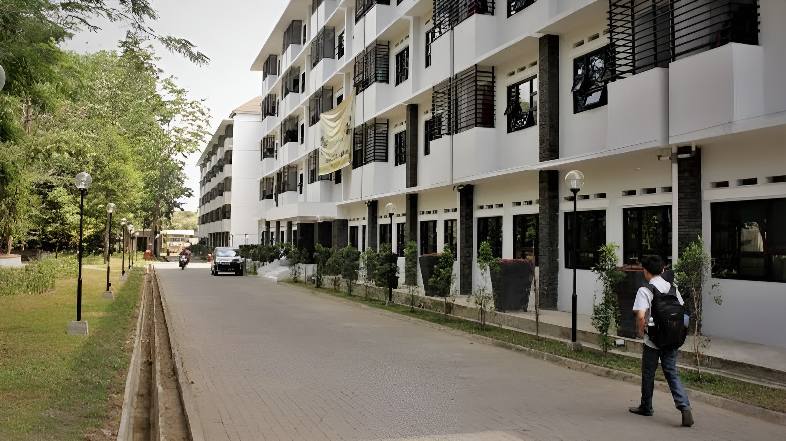
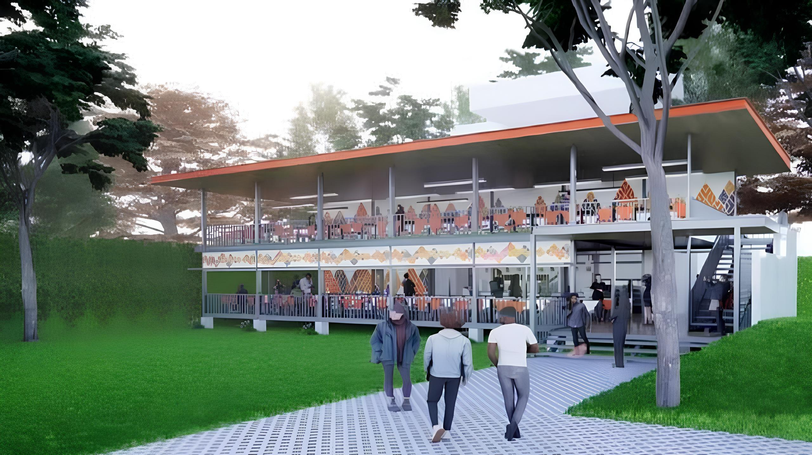
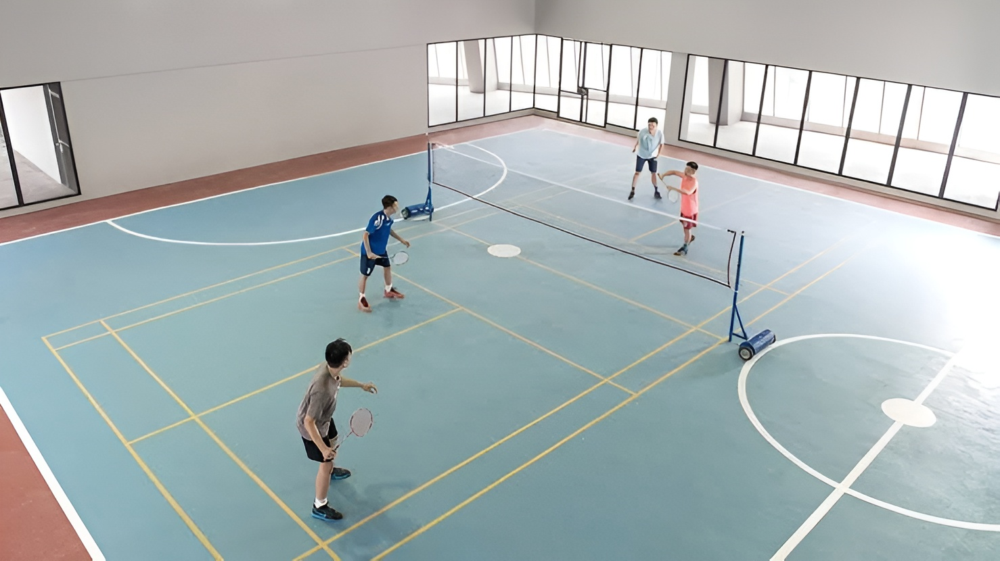
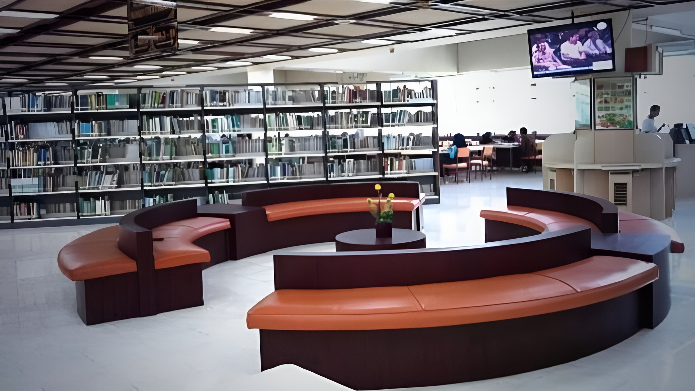
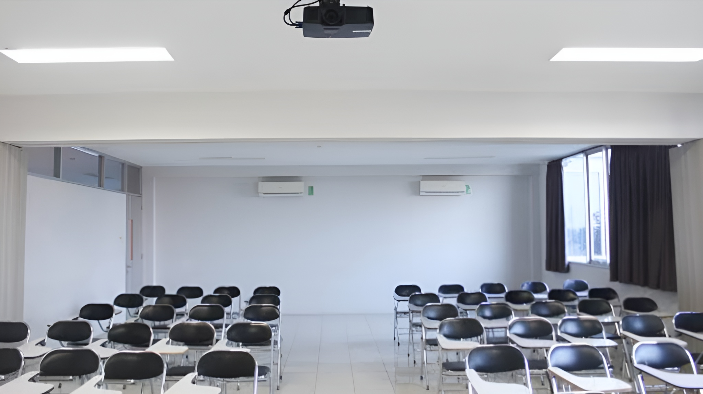

Selamat Datang di INSTITUT TEKNOLOGI CIKARANG
Institut Teknologi Cikarang (ITC) adalah sebuah perguruan tinggi yang berfokus pada pengembangan ilmu pengetahuan dan teknologi, yang berlokasi di pusat kawasan industri strategis di Cikarang, Jawa Barat. Didirikan dengan semangat untuk mencetak generasi inovatif dan kompeten, ITC hadir sebagai institusi pendidikan tinggi yang responsif terhadap kebutuhan dunia industri dan kemajuan teknologi global. Dengan visi menjadi pusat unggulan teknologi dan rekayasa yang berdaya saing internasional, Institut Teknologi Cikarang menawarkan berbagai program studi di bidang teknik, teknologi informasi, dan manajemen industri. Kurikulum yang dirancang berbasis praktik dan kebutuhan industri, didukung oleh dosen profesional serta fasilitas laboratorium modern, menjadikan ITC tempat ideal untuk menempa para calon insinyur dan technopreneur masa depan. Institut Teknologi Cikarang juga menjalin kemitraan erat dengan berbagai perusahaan nasional dan multinasional yang berada di kawasan industri Cikarang dan sekitarnya, memberikan peluang besar bagi mahasiswa untuk melakukan magang, penelitian terapan, dan penyerapan kerja secara langsung setelah lulus. Dengan moto "Teknologi untuk Masa Depan", ITC berkomitmen untuk terus menjadi penggerak inovasi dan solusi bagi tantangan dunia modern melalui pendidikan, riset, dan pengabdian kepada masyarakat. .
Profil Sekolah
Nama Sekolah: INSTITUT TEKNOLOGI CIKARANG
Alamat: Jl. Raya Jend. Gatot Subroto No.1 ,Kec. Cikarang Utara, Kabupaten Bekasi, Jawa Barat 17530
Visi:
Menjadi universitas unggulan berkelas dunia yang berperan aktif dalam pengembangan ilmu pengetahuan, teknologi, dan seni, serta berkontribusi terhadap pembangunan berkelanjutan dan kesejahteraan masyarakat.
Misi:
1. Menyelenggarakan pendidikan tinggi yang berkualitas untuk menghasilkan lulusan yang kompeten, beretika, dan siap menghadapi tantangan global.
2.Mengembangkan penelitian inovatif yang memberikan kontribusi nyata terhadap kemajuan ilmu pengetahuan dan teknologi.
3.Melaksanakan pengabdian kepada masyarakat sebagai bentuk tanggung jawab sosial universitas.
4.Membangun kemitraan strategis dengan institusi nasional dan internasional untuk memperluas jejaring dan kolaborasi akademik.
5.Menumbuhkan budaya akademik yang inklusif dan adaptif terhadap perkembangan zaman dan kebutuhan dunia kerja.
Prestasi Sekolah
Institut Teknologi Cikarang telah mencatat berbagai prestasi membanggakan, baik di tingkat regional maupun nasional. Beberapa di antaranya:
Sarana dan Prasarana
Sekolah kami dilengkapi dengan berbagai fasilitas untuk mendukung proses belajar mengajar:
Asrama Sekolah
Kantin
Lapangan
Perpustakaan
Ruang Belajar
Tentang Sekolah Ini
Institut Teknologi Cikarang (ITC) merupakan institusi pendidikan tinggi yang didirikan dengan visi menjadi pusat unggulan dalam pengembangan ilmu pengetahuan dan teknologi yang berdaya saing global. Sejak berdiri pada tahun 1945, ITC terus menunjukkan komitmennya dalam menciptakan lulusan yang tidak hanya memiliki kemampuan akademik yang kuat, tetapi juga keterampilan praktis yang relevan dengan kebutuhan industri modern. Dengan fokus pada pendekatan pembelajaran berbasis proyek, inovasi, dan kolaborasi lintas disiplin, ITC memberikan pengalaman belajar yang dinamis dan aplikatif bagi seluruh mahasiswanya. Kampus ITC dikenal memiliki lingkungan akademik yang inklusif dan progresif, didukung oleh tenaga pengajar profesional serta fasilitas yang lengkap dan mutakhir. ITC juga aktif menjalin kerja sama dengan berbagai institusi, baik di dalam maupun luar negeri, guna memperluas wawasan global mahasiswa serta membuka peluang riset dan pengembangan teknologi. Melalui sinergi antara pendidikan, penelitian, dan pengabdian masyarakat, ITC berupaya mencetak generasi cendekia yang mampu berkontribusi secara nyata dalam kemajuan bangsa di era digital dan transformasi industri saat ini.